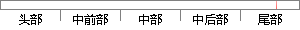

本次的毕业设计在老师的指导下成功的完成了。
片段位置图

相似结果|
相似片段 1：华荣老师的关心和指导下，我成功地完成了本次毕业系统的设计。在设计的过程当中，遇到不能解决的问题时，巩华荣老师并没有直接给我答案了事，而是耐心地讲解，引导我自己去解决问题、度过难关。从毕业设计开始到结题
相似片段 2：在老师和同学的支持与帮助之下，终于顺利地完成了本次毕业设计。本次毕业设计是在文明虎老师的精心指导下完成的，在这几个月的学习设计中，我不仅学到了许多新的知识和解决问题的方法，而且也开阔了视野，提高了
相似片段 3：45致谢本次毕业设计是在梁贵书老师的指导下完成的，在毕业设计的制作过程中，老师对学生认真负责，更是对自己严格要求，不允许学生偷懒和偷工减料，督促学生按时按照学校的进度进行毕业设计。并且在毕业设计
相似片段 4：本次毕业设计是在陈超老师的精心指导下完成的，导师渊博的知识、严谨的治学态度深深的影响着我。他无论在理论上还是在实践中，都给予我很大的帮助，使我的毕业设计逐步地趋于完善。在此期间，我不仅学到了许多新
相似片段 5：本次毕业设计是在陈超老师的精心指导下完成的，导师渊博的知识、严谨的治学态度深深的影响着我。他无论在理论上还是在实践中，都给予我很大的帮助，使我的毕业设计逐步地趋于完善。在此期间，我不仅学到了许多新
|
※ 片段修改建议 ※
近似词参考：- 老师：教员 先生
- 成功：乐成 胜利
- 成了：成为了
系统自动生成语句：本次的毕业设计在教员的指导下乐成的完成为了。
注：本片段修改建议为系统自动生成，仅供参考。